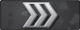
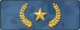
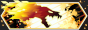

| Nr | Nazwa | Wygląd |
|---|---|---|
| 1 | Srebro I | |
| 2 | Srebro II | |
| 3 | Srebro III |  |
| 4 | Srebro IV | |
| 5 | Elitarne srebro | |
| 6 | Mistrzowskie elitarne srebro | |
| 7 | Złoty laur I |  |
| 8 | Złoty laur II | |
| 9 | Złoty laur III | |
| 10 | Mistrzowski złoty laur | |
| 11 | Mistrzowski obrońca I | |
| 12 | Mistrzowski obrońca II | |
| 13 | Elitarny mistrzowski obrońca | |
| 14 | Wybitny mistrzowski obrońca | |
| 15 | Legendarny orzeł | |
| 16 | Mistrzowski legendarny orzeł | |
| 17 | Mistrzowska pierwsza klasa | |
| 18 | Elita światowa |
| Nr | Nazwa | Wygląd |
|---|---|---|
| 1 | Szczur laboratoryjny 1 | |
| 2 | Szczur laboratoryjny II | |
| 3 | Biegnący zając I | |
| 4 | Biegnący zając II | |
| 5 | Dziki skaut I | |
| 6 | Dziki skaut II | |
| 7 | Elitarny dziki skaut | |
| 8 | Lis łowca I | |
| 9 | Lis łowca II | |
| 10 | Lis łowca III | |
| 11 | Elitarny lis łowca | |
| 12 | Wilk szary | |
| 13 | Wilk żaru | |
| 14 | Wilk ognia | |
| 15 | Wyjący alfa |  |
Turniejowy - rozgrywka w CS:GO koncentruje się głównie na trybie "turniejowy" (tzw. mecze rankingowe). W trybie tym walczą ze sobą dwie pięcioosobowe drużyny. Wybór strony startującej (terroryści/antyterroryści) jest losowy, a po rozegraniu 15 rund, następuje zamiana drużyn miejscami. Mecz składa się z 30 rund i kończy się wygraniem przez jedną drużynę 16 rund albo remisem 15:15. W zależności od scenariusza mapy (zamach bomby/uprowadzenie), drużyny mają do wykonania określone zadania. Mecze rozgrywane w trybie "turniejowy" wpływają na rangę gracza, reprezentująca poziom jego umiejętności. W grze występuje 18 rang od "Srebra I" do "Elity Światowej".
Uproszczony - tryb ten korzysta z uproszczonych zasad klasycznych meczów turniejowych, m.in. skrócenie meczu do 15 rund, wyłączony bratobójczy ogień, włączone przenikanie postaci gracza przez sojuszników, zwiększona ilość graczy w drużynach. Gracze otrzymują bezpłatny pancerz i hełm na początku każdej rundy, a antyterroryści - także zestaw do rozbrajania (kub zestaw ratunkowy). Zadania drużyn pozostają takie same jak w meczach turniejowych, ale tu nie występują rangi.
Deathmatch - wszystkie bronie dostępne w grze są darmowe, postać gracza natychmiast odradza się po śmierci, a celem gracza jest eliminacja jak największej liczby graczy drużyny przeciwnej w ciągu 10 minut. Tryb ten używany jest głównie do treningu.
Wyścig zbrojeń - zabijanie przeciwnika daje graczowi lepszą broń. Dokonanie zabójstwa z użyciem ostatniej dostępnej broni, złotego noża, daje graczowi zwycięstwo. W tym trybie nie można zakupić broni, a gracz odradza się natychmiast po swojej śmierci.
Demolka - rozgrywka prowadzona jest na zmniejszonych mapach na standardowych zasadach gry. Zabicie przeciwnika daje graczowi lepszą broń w kolejnej rundzie.
Latający skaut - gracze grają na standardowych zasadach na mapach o zmniejszonej grawitacji, wyposażeni jedynie w karabin snajperski SSG 08 oraz nóż.
Skrzydłowy - dodany w aktualizacji w 2017 roku. W 16-rundowych meczach ze scenariuszem zamachu bombowego na niewielkich mapach walczą ze sobą dwuosobowe drużyny. Mecze rozgrywane w tym trybie wpływają na odrębną rangę trybu "skrzydłowego", reprezentującą umiejętności gracza i wpływającą, podobnie jak w trybie "turniejowym", na dobór przeciwników. Podobnie jak w przypadku trybu "turniejowego", na trybie "skrzydłowy występuje 18 rang, od "Srebra I" do "Elity Światowej".
Strefa zagrożenia - dodany w aktualizacji w 2018 roku w grudniu. Jest to tryb battle royale o nazwie "strefa zagrożenia" (ang. Danger Zone), w którym można grać samodzielnie oraz w dwu- lub trzyosobowych drużynach. W meczu bierze udział maksymalnie 18 osób. Gracze wybierają przed rozpoczęciem gry miejsce zrzutu ze śmigłowca oraz przedmiot startowy. Dodatkowe wyposażenie, takie jak broń, amuniacja, zastrzyki wzmacniające lub pancerz zdobyć można przeszukując miejsca na mapie lub wykonując zadania. Możliwe jest również zamówienie przedmiotów przy użyciu tabletu, za pieniądze zebrane w czasie eksploracji mapy. Wybrane przedmioty dostarczają drony. Zwycięzcą gry jest gracz lub drużyna, która jako ostatnia utrzyma się przy życiu. W lipcu 2019 roku do tego trybu wprowadzono odrębny system rankingowy, wyróżniający 15 rang. Od rangi "Szczur laboratoryjny I" do rangi "Wyjący alfa".